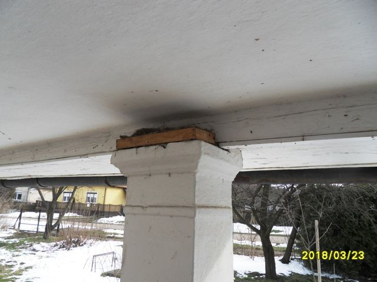

Szűcs Imre Fazekas Gyűjteményes Háza a Tiszafüred Belsőkertsor utca 5. szám alatti ház felújításával jött létre. A felújításhoz a Népi Építészeti Program keretében kapott támogatást a mester. A Gyűjteményes Ház megnyitója 2021. június 18-án lesz. A látogatók ezt követően tekinthetik meg. a járványügyi szabályok figyelembevételével.
A felújítás előtti állapotot az alábbi képek szemléltetik:


A felújítás utáni képek:



A felújítás során törekedtünk arra, hogy a legtöbb népi építészeti emléket őrizzük meg:
- Boltíves kemencetüzelő nyílások a konyha-pitvar oldalfalában.
- A korabeli szabadkémény négy pilléren nyugvó, boltíves füstjáratai az oldalfal mellett és a boltívek közepén, amelyek funkcionálisan is működőképesek.
- A szabad tűztér felső boltív-szerkezetére ráépített hagyományos kémény.
- A szobák mestergerendás jellege födémszerkezete.
- Az utcai szobai mestergerendája: natúr fa, benne az építés évszáma 1865.
- Eredeti nyílászárók, bejárati ajtón huzatszabályozó kis ablakkal, eredeti réz kilincsekkel és cilinderekkel.
- A főépület tetőszerkezetének alakja.
- Könyöklős tornác, korabeli pádimentum tégla hidegburkolattal.
- Padlásfeljáró a pitvar légterében, belülről alatta a holt-lépcsőtérben fali téka.
- A falazatban feltárt tárolás céljára meghagyott bemélyedések, polcok.